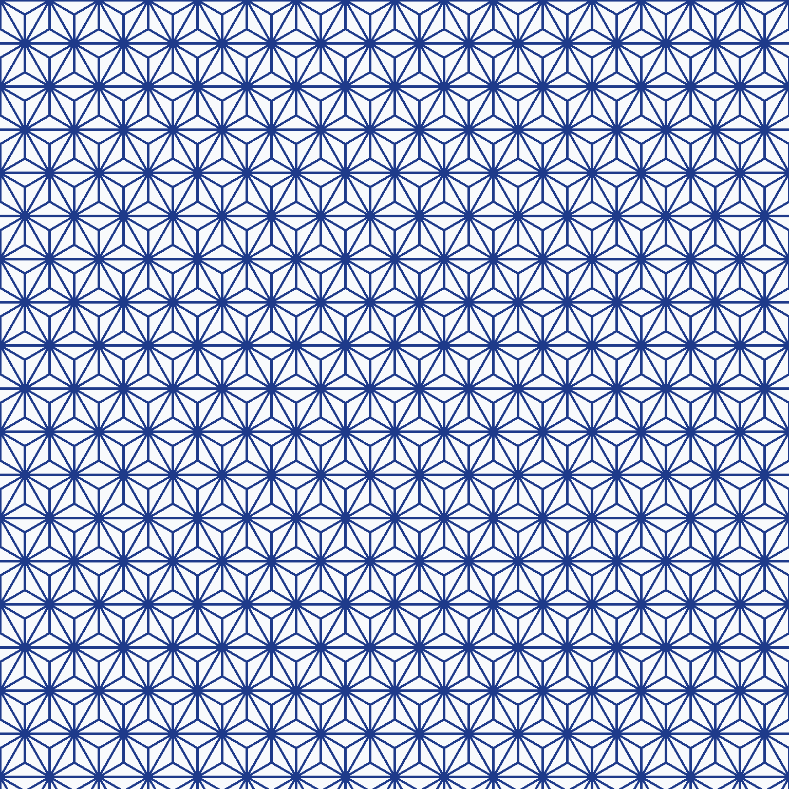

v2.1で検証すること
v2で1536×1536全体トレースをやめ、最小反復タイルまで縮小できました。一方、タイル境界での欠けと、輪郭トレース由来の線幅ばらつきが残りました。
v2.1では二値化・色整理とwrapped paddingで境界の外側も見せてからImageTracerJSへ渡します。さらに実験的にスケルトン化した中心線をSVG strokeとして再構成し、線幅を明示的に統一します。VTracer比較も残します。
1. 元画像と変換条件
元画像を読み込み中…
VTracer WASM: not loaded
元PNG

2. 反復単位
v2.1 preflightは継ぎ目不一致率、推定線幅、線幅CVを表示します。自動検出がずれた場合は X / Y / 幅 / 高さを手動調整できます。
3. ベクター化
待機中
品質改善比較は「現行raw」「二値化＋wrapped padding」「中心線＋uniform stroke」の3結果を同じタイルで並べます。中心線方式は実験段階で、特に麻の葉のような線主体の幾何学模様を対象に評価します。
ベクター結果
0 results
まだ変換していません。
判定ポイント
元PNGとの見た目境界欠け線幅CV拡大時の輪郭path数path命令数SVG容量反復継ぎ目色編集元画像に対するタイル面積
Tile SVGは切り出した1単位だけ、Pattern SVGはそのタイルをSVG <pattern>として反復する素材です。中心線方式はfill輪郭ではなくstrokeを持つため、線色の編集にも対応します。